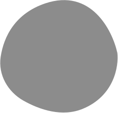

Astra — Что это, и с чем это едят?
Astra — твой персональный голосовой ассистент, который помогает, решает задачи и делает жизнь удобней.
Astra — твой персональный голосовой ассистент, который помогает, решает задачи и делает жизнь удобней.